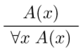
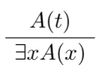
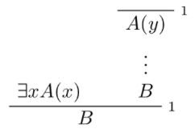

functions: take different numbers of arguments, returns a result. e.g. \(mul(x,y)\), \(square(x)\)
predicates, relations: takes one or more arguments, is either true or false. e.g. \(even(x)\), \(divides(x,y)\)
formulas: say things. make assertions about objects in the domain.
Quantifiers:
- ∀x: "for all x"
- ∃x: "there exists an x"
Generally bind tightly: ∀x P ∨ Q == (∀x P) ∨ Q
free variable: variable that's not bound
sentence: a formula that has no free variables
| Universal quantification | Existential quantification | Equality |
|---|---|---|
|  |  | |

|
 |
You can use implication to relativize quantification (put it into a specific domain).
Universal quantification, e.g. "every prime number greater than two is odd":
∀x (prime(x) ∧ x > 2 → odd(x))
Existential quantification, e.g. "some woman is strong":
∃x (woman(x) ∧ strong(x))
Remember to use ∧ with ∃, and not →.
Let F be a set of function symbols, P a set of predicate symbols.
Model M for (F, P) consists of:
- non-empty set A ("domain", "universe")
- interpretation operation \((\cdot)^M\) for for symbols in F, P
Universe A can be any non-empty set.
only constraint: \(F^M\) and \(P^M\) have same number of arguments as F and P.
Truth definition for formula Φ without quantifiers and free variables in model M by induction on the structure of Φ:
- M ⊨ ¬Φ ↔ not: M ⊨ Φ ↔ M ⊭ Φ
- M ⊨ Æ∧ Ψ ↔ M ⊨ Φ and M ⊨ Ψ
- M ⊨ Φ ∨ Ψ ↔ M ⊨ Φ or M ⊨ Ψ
- M ⊨ Φ → Ψ : if M ⊨ Φ then M ⊨ Ψ
- M ⊨ P(t₁, .., tn) ↔ (\(t_1^M,\ldots,t_n^M) \in P^M\)
Interpretation of terms \(t^M\):
- if t = c for constant c, then \(t^M = c^M\)
- if \(t = f(t_1,\ldots, t_n)\), then \(t^M = f^M(t_1^M,\ldots,t_n^M)\)
to interpret free variables, you use an environment.
an environment l: var → A (look up function) interprets free variables in the domain
terms are built from variables, constants, function symbols
- variables are interpreted according to environment
- constants are interpreted according to \((\cdot)^M\)
- function symbols are interpreted according to \((\cdot)^M\)
Truth of formula Φ in model M with universe A with respect to environment e is defined by induction on the structure of Φ.
Interpretation \(t^{M,l}\) of term t is
\begin{align} t^{M, l} = \begin{cases} l(x) &&\text{if } t = x \text{ for a variable } x \\ c^M &&\text{if } t = c \text{ for a constant } c \\ f^M (t_1^{M, l}, \ldots, t_n^{M, l}) &&\text{if } t = f(t_1, \ldots, t_n) \end{cases} \end{align}by induction on term structure.
M ⊨l ∀x HI ↔ for all a ∈ A it holds that \( M \models_{l [x \to a]} \phi \)
M ⊨l ∃x Φ ↔ for some a ∈ A it holds that \( M \models_{l [x \to a]} \phi \)
For all models M and all environments e, such that M ⊨l Φ₁ and ... and M ⊨l Φn hold, it also holds that M ⊨l ψ
Formulas φ and ψ are logically equivalent (φ ≡ ψ) if for all models M and environments l, M ⊨l φ ↔ M ⊨l ψ
i.e. φ and ψ are true in precisely the same models when interpreted with the same environments.
theorem: φ ≡ ψ ↔ φ ⊨ ψ and ψ ⊨ φ
Let φ be a formula, and Γ be a set of formulas.
φ is satisfiable iff there is some model M and some environment l such that M ⊨l φ
φ is valid iff M ⊨l φ holds for all models M and all environments l in which φ can be checked.
Γ is consistent/satisfiable iff there is some model M and some environment l such tat M ⊨l ψ for all ψ ∈ Γ
for all formulas φ, ψ: φ ≡ ψ means that φ ↔ ψ is valid
Example: "Marie and Jan are clever."
Specification and model used:
two predicates:
- CC(x): x is clever
- LL(x): x has learned logic
two constants:
- m: Marie
- j: Jan
model M:
- domain A = the set of all humans
- \(C^M\) = { x ∈ A | x is clever }
- \(LL^M\) = { x ∈ A | x has learned logic }
- \(j^M \)= Jan
- \(m^M\) = Marie
Then:
- "Marie and Jan are clever": C(m) ∧ C(j)
- "Not everybody is clever": ¬∀x C(x)
- "Somebody has learned logic": ∃x LL(x)
- "Not everybody has learned logic, but Marie and Jan have": ¬∀x LL(x) ∧ LL(m) ∧ LL(j)
∀ and →:
- ∀x(LL(x) → C(x)): "everyone who has learned logic is clever"
- not the same as ∀x LL(x) → ∀x C(x): "if everyone has learned logic, everyone is clever"
∃ and ∧:
- ∃x(L(x) ∧ C(x)): "some logicians are clever"
- not the same as ∃x(L(x) → C(x)): "if someone is a logician, they are clever"
Formulas with free variables express properties and relations:
- no free variables: a sentence
- one free variable: a property
- two or more free variables: a relation
If you move a negation around ∀, it becomes ∃, and vice versa.
It also holds that:
-
∀x(φ ∧ ψ) ≡ ∀x φ ∧ ∀x ψ
- BUT in general doesn't hold for ∨
-
∃x(φ ∨ ψ) ≡ ∃x φ ∨ ∃x ψ
- BUT in general doesn't hold for ∧
In general, you can't move quantifiers through an implication.
Order of repeated ∀ or ∃ doesn't matter. But if you have both ∃ and ∀, the order is important.
Interpretation: specifying the meaning of a predicate symbol.
- unary predicate P: set of elements of domain D for which P is true.
- constant c: an element of domain D
- function f with arity n: function mapping n elements of domain D to another element of D
- relation R with arity n: set of n tuples of elements of domain D for which R is true
You can find the truth value of sentences intuitively.
Completeness: if formula A is logical consequence of set of sentences Γ, then A is provable from Γ.
Soundness: if A is provable from Γ then A is true in any model of Γ